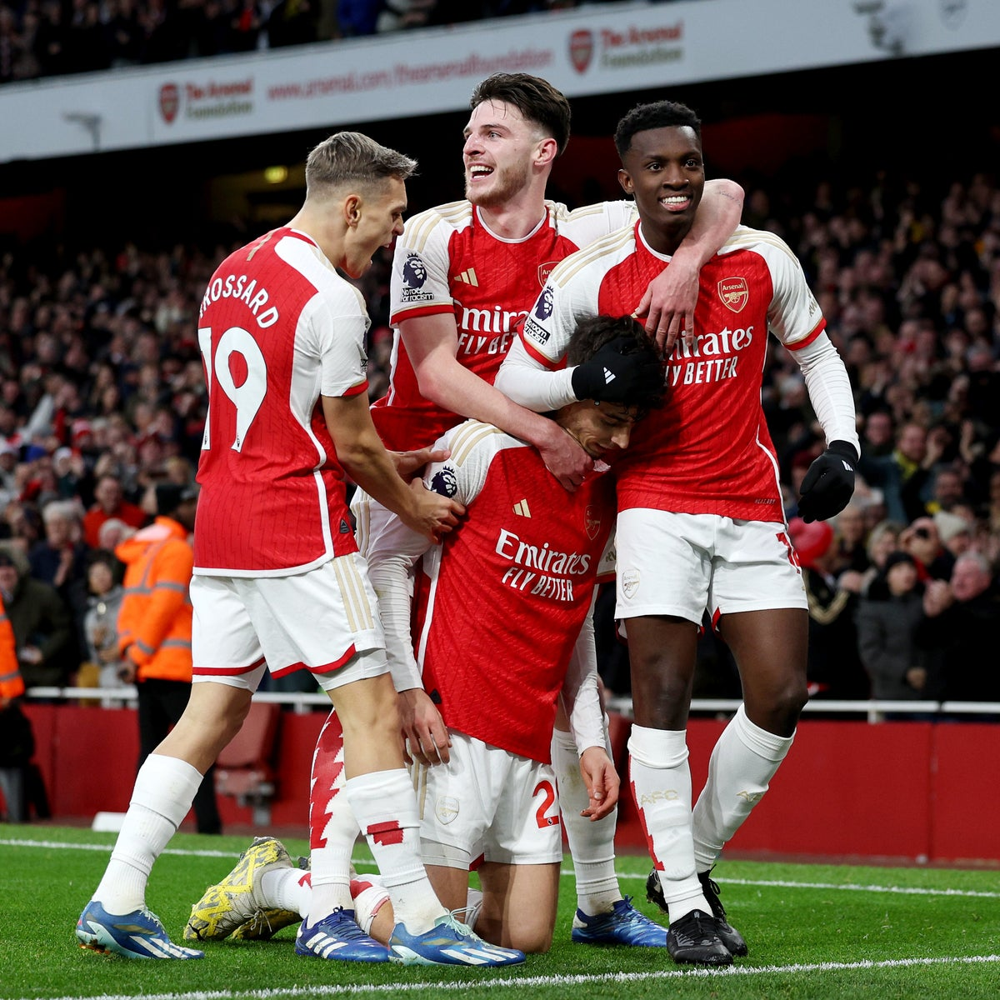

Arsenal

Retour
Les Gunners n'ont jamais remporté la Ligue des champions, même s'ils ont touché du bout de leur doigt leur rêve, il n'y a pas si longtemps. Retour sur l'historique du club londonien dans la compétition.
Club mythique en Angleterre, Arsenal fait partie du vivier de clubs londoniens se disputant chaque année la Premier League. Après plus de six ans de disette, les Gunners retrouvaient, lors de cette édition 2023-2024, la Ligue des champions. L’occasion donc pour se plonger dans l’histoire du club au sein de la compétition européenne.
Quel est le bilan d’Arsenal en Ligue des champions ?
S’il est un club qu’on ne présente plus en Angleterre, Arsenal a eu plus de mal à se faire une place sur la plus grande scène européenne. Bien que l’équipe ait pu faire de très bons parcours dans les années 2000, elle a vite pris l’habitude de se faire sortir en ⅛ e de finale. Ainsi, durant toute son histoire en Ligue des champions, Arsenal compte :
207 matchs
105 victoires
44 nuls
58 défaites
Un taux de victoire égal à 50,72%, plutôt correct pour une équipe qui a l’habitude de se faire éliminer assez tôt dans la compétition.
Regardons, de plus près, certaines des équipes contre qui Arsenal a le plus joué dans la compétition et son bilan face à ces dernières :
Vs Bayern Munich : 6 confrontations (3 victoires - 2 nuls - 7 défaites)
Vs FC Barcelone : 5 confrontations (1 victoire - 2 nuls - 6 défaites)
Vs Borussia Dortmund : 4 confrontations (4 victoires - 1 nul - 3 défaites)
Vs PSV Eindhoven : 4 confrontations (3 victoires - 4 nuls - 1 défaite)
Quels sont les bons et les moins bons matches d’Arsenal en Ligue des champions ?
Pour les fans d’Arsenal, le meilleur match et parcours du club en Ligue des champions restera sûrement, et encore pour quelque temps, la finale perdue de l’édition 2005-2006 face au FC Barcelone.
En revanche, en ce qui concerne les plus difficiles du club, nous pouvons, sans beaucoup d’hésitation, citer la double confrontation face au Bayern Munich en ⅛ de finale lors de l’édition 2016-2017. Celle-ci s’était soldée par un score de 10-2 (5-1 à l’aller, 5-1 au retour). Les fans des Gunners ne le savaient pas à ce moment-là, mais c’était la dernière fois qu’Arsenal jouait la Champions League avant l’édition 2023-2024 et son retour en grâce.
Pour l’anecdote, avant cette double confrontation en ⅛ de finale face au Bayern Munich en 2016-2017, le dernier match d’Arsenal en LDC contre le club allemand remontait à l’année précédente et s’était également soldé par un 5-1. Autrement dit, lors des trois derniers Arsenal-Bayern, les Allemands dominent les débats sur un score cumulé de 15-3.
Qui sont les meilleurs buteurs d’Arsenal en Ligue des champions ?
Si l’effectif d’Arsenal s’est rajeuni, notamment depuis l’arrivée de Mikel Arteta sur le banc rouge et blanc, ce dernier n’a pas encore réussi à marcher dans les pas de ceux qui ont fait la gloire du club dans les années 2000. En même temps, quand la pause de Ligue des champions dure six ans, difficile pour la jeune génération de pouvoir espérer dépasser l’ancienne.
Ainsi, sur le top 10 des meilleurs buteurs du club en Ligue des champions, 7 ont mis fin à leur carrière il y a quelques années déjà et d’autres ne portent plus les couleurs du club.
Voici le top 10 des meilleurs buteurs d’Arsenal en Ligue des champions :
Thierry Henry : 35 buts
Robin Van Persie : 18
Theo Walcott : 15
Cesc Fabregas : 13
Freddie Ljungberg : 13
Olivier Giroud : 12
Robert Pirès : 11
Alexis Sanchez : 9
Lukas Podolski : 8
Emmanuel Adebayor : 8
Le premier joueur portant actuellement les couleurs du club est classé à la 16e position. Il s’agit de Gabriel Jesus, arrivé de Manchester City en 2022, qui compte 4 buts en LDC sous le maillot des Gunners.